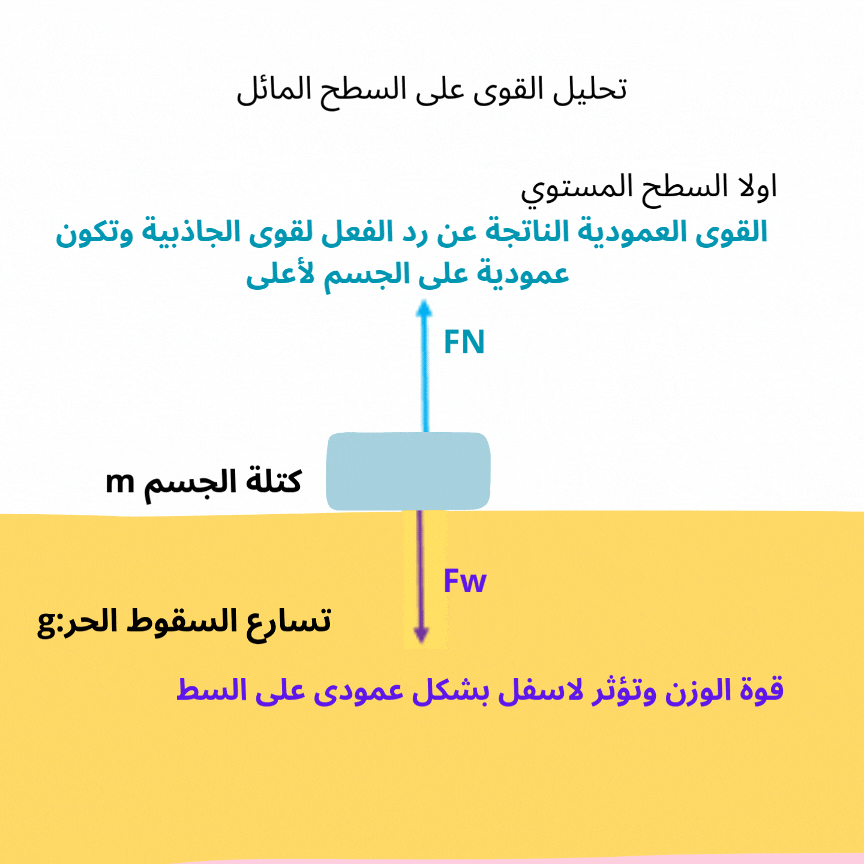
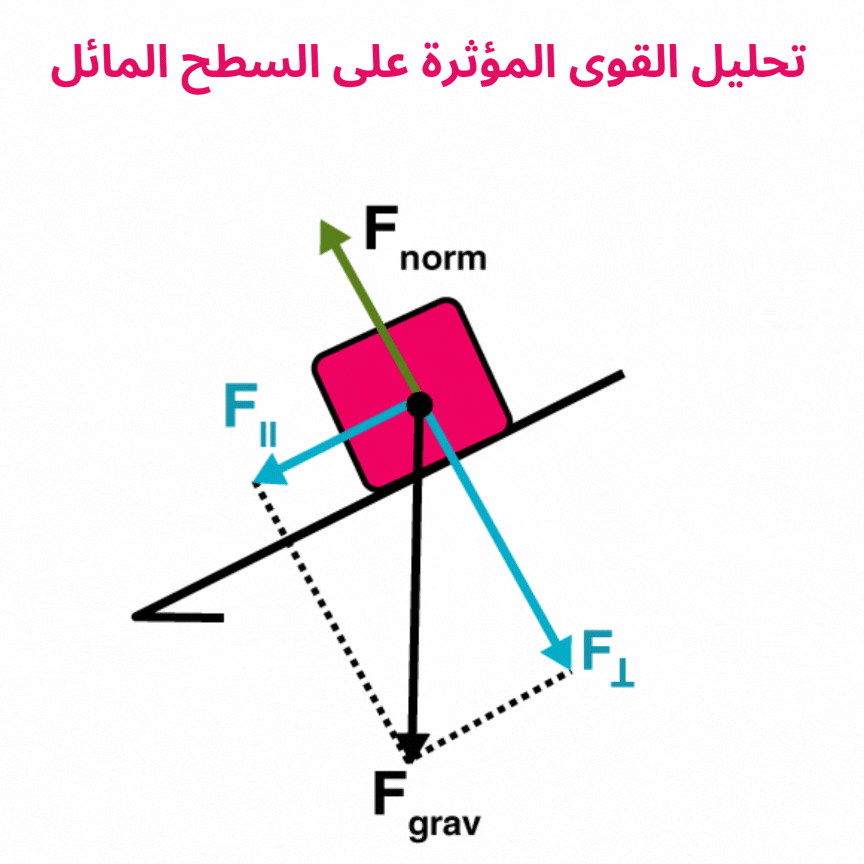

حركة الجسم على سطح مائل
في حياتنا اليومية، نجد العديد من الأمثلة التي تمثل مفهوم السطح المائل، مثل
- منزلقات الألعاب في الحدائق.
- الطرق الجبلية أو المنحدرات في الشوارع.
- استخدام المنحدرات عند نقل الأثاث أو الأشياء الثقيلة.
القوى المؤثرة على جسم على سطح مائل


عندما نضع جسمًا على سطح مائل (مثل سيارة على منحدر)، فإن وزنه يؤثر عليه بقوة عمودية إلى أسفل باتجاه مركز الأرض. يتم تحليل هذه القوة إلى
- مركبة موازية للسطح المائل: تدفع الجسم إلى الأسفل على طول السطح.
- مركبة عمودية على السطح: تضغط على السطح.
مثال:
عندما تقف سيارة على طريق منحدر، يجب أن تكون المكابح قادرة على التغلب على القوة الموازية لمنع السيارة من الانزلاق.
التسارع الناتج على سطح مائل
إذا كان السطح أملسًا (بدون احتكاك)، فإن الجسم يتسارع بسبب تأثير المركبة الموازية فقط:
a = g × sin(θ)
حيث g هو تسارع الجاذبية الأرضية ,ويساوي 9.8 m/s2).
أما إذا كان السطح خشنًا (مع وجود احتكاك)، فإن التسارع يقل لأن قوة الاحتكاك تعمل عكس اتجاه الحركة.
a = g × sin(θ) - μ × g × cos(θ)
مثال:
عند دفع صندوق ثقيل على منحدر مائل خشن، يتحرك ببطء أكبر مقارنة بسطح أملس بسبب تأثير الاحتكاك.
أمثلة من الواقع
- الألعاب والمنزلقات: تكون سرعة النزول أكبر إذا كان المنزلق أكثر انحدارًا، حيث يزداد التسارع مع زيادة زاوية الميل.
- الطرق الجبلية: السيارات تحتاج إلى قوة إضافية عند الصعود، وأثناء النزول يعتمد السائق على المكابح للتحكم في السرعة.
- نقل الأشياء الثقيلة: تُستخدم منحدرات صغيرة لتقليل الجهد اللازم لنقل البضائع الثقيلة.
- الأجسام على منحدر: إذا وضعت زجاجة على سطح مائل بدرجة ميل كافية، ستنزلق بسبب تأثير الجاذبية.
تطبيق عملي: سيارة على منحدر
لنفترض أن سيارة كتلتها 1000 كجم متوقفة على منحدر بزاوية 30°:
- القوة الموازية للسطح: تحاول سحب السيارة إلى أسفل.
- لحسابها:
- F|| = m × g × sin(θ) = 1000 × 9.8 × 0.5 = 4900 N.
- إذا كان السائق يريد إبقاء السيارة ثابتة، يجب أن تعادل المكابح هذه القوة.